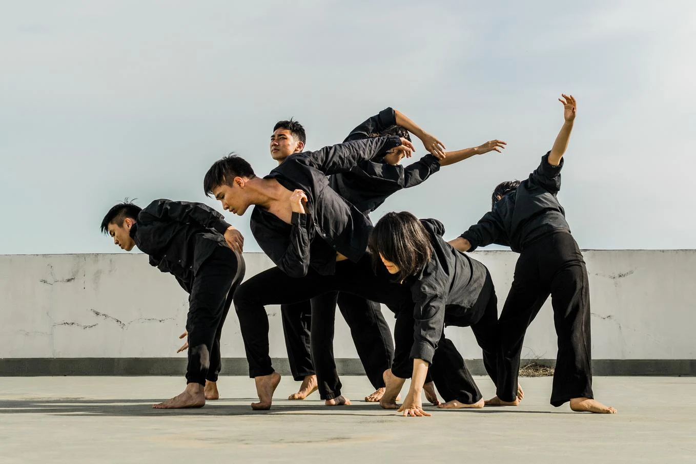
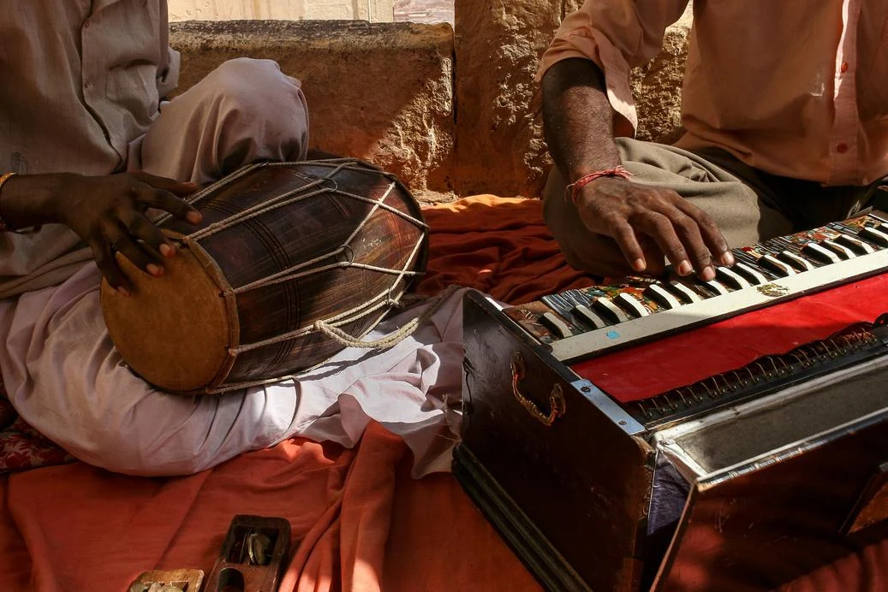

Skip to content
Scheherazade.
Home
Upcoming events
Archive
Journal
Gallery
About
Contact
Switch theme
The archive
Visual studies from the collection.
Movement on stage

A dialogue in movement

Rhythm and memory